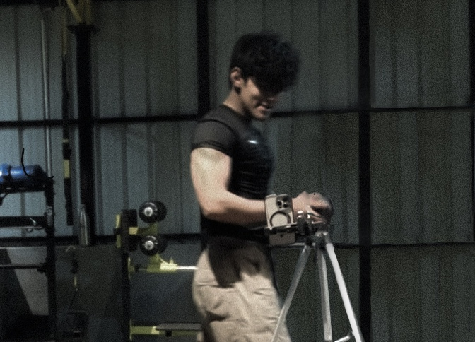

|

|
A bout
I'm Thakur Divyansh, a passionate coder and game developer hailing from the enchanting city of
Noida, Uttar Pradesh, India. With a fervor for crafting code and designing immersive games, I
immerse myself in the world of programming.
Beyond the digital realm, you can find me indulging in PC gaming, shooting hoops on the
basketball
court, and unwinding with captivating web series.
I thrive on rapid learning and possess an insatiable eagerness to acquire new skills. My forte
lies
in problem-solving, critical thinking, and strategic planning. Adaptability and a keen ability
to
learn are my driving forces, propelling me towards mastering new challenges and honing my skill
set.
|